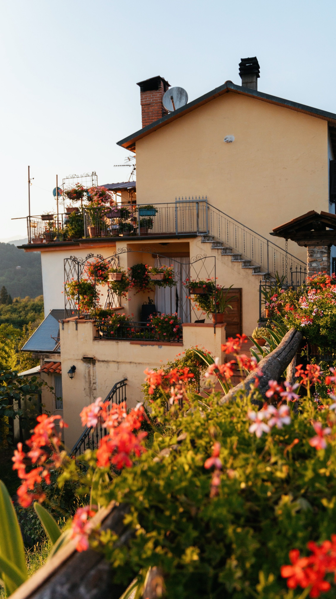
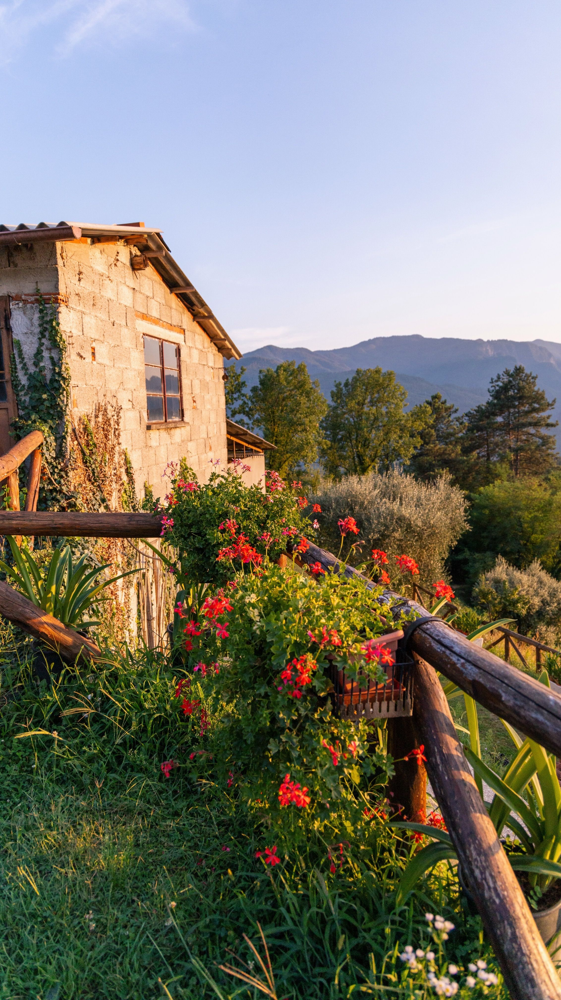
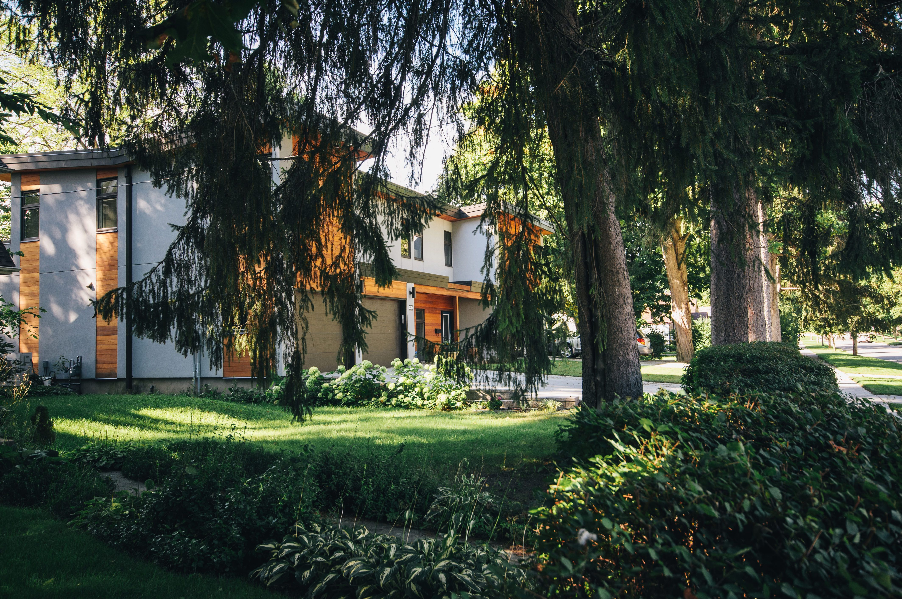

In This Article
- Introduction
- Evaluate the Soil Before Adding Products
- Reduce Compaction Without Destroying Soil Structure
- Add Organic Matter Appropriately
- Prepare the Planting Area for What You Will Grow
- How to Know Whether Preparation Is Working
- Maintain Soil Improvements Over Time
- Frequently Asked Questions
- Conclusion
Introduction
Preparing soil before planting starts with understanding what is already present. Texture, drainage, compaction, organic matter, pH, and nutrient levels all influence how roots develop and how water and air move through the soil.
Adding fertilizer, sand, lime, or compost without diagnosis may fail to solve the real problem and can sometimes create new imbalances. Observe first, test when appropriate, and make gradual changes based on the needs of the plants you intend to grow.
Evaluate the Soil Before Adding Products
Observe how the area drains after rain. Water that remains for a long time may indicate compaction, naturally slow drainage, or another restrictive layer. Soil that dries very quickly may have a lighter texture or be highly exposed to sun and wind.
Take a small handful of slightly moist soil and observe how it behaves. Sandy soil usually falls apart easily, while clay-rich soil can form a more plastic ribbon or mass. This simple test is only a rough guide, but it can help you understand texture.
Look at existing vegetation. Shallow roots, weak growth, or areas where few plants thrive can indicate soil problems, although light, water, disease, and competition may also be involved.
For important projects or persistent problems, a soil test can be useful. It may provide information about pH and nutrient levels and can guide amendments more accurately.
Do not make major pH changes without measurement. Corrective products should be applied according to test results and recommendations because excessive amounts can create new problems.
Before digging deeply, locate buried utilities, irrigation lines, cables, and pipes. Soil preparation should never compromise underground services.
Reduce Compaction Without Destroying Soil Structure
Compacted soil contains fewer spaces for air and water. Roots meet greater resistance and drainage can become slower.
The first step in preventing compaction is to reduce repeated foot traffic over planting areas. In vegetable gardens and beds, design paths so you can reach plants without stepping on cultivated soil.
Avoid digging clay soil when it is saturated. Working very wet clay can create dense clods that harden as they dry. Wait until the soil is moist but no longer sticky.
In some situations, a garden fork can loosen soil without completely turning the profile. The appropriate depth and method depend on the crop and the condition of the site.

Cover crops can also contribute roots that help improve structure gradually while protecting the surface from erosion when managed correctly.
Avoid adding small amounts of sand to clay soil in an attempt to make it lighter. Poorly proportioned mixtures can create an even denser structure.
Soil structure improves over time. Organic matter, living roots, surface cover, and reduced traffic are long-term tools rather than instant fixes.
Add Organic Matter Appropriately
Mature compost can help lighter soils retain moisture and can support better structure in heavier soils. Use well-decomposed material from a reliable source.
Large quantities do not need to be incorporated every season. A reasonable layer applied at the surface or mixed lightly into the planting zone may be enough, depending on the crop and soil test.
Too much organic matter can also increase nutrient levels beyond what plants need. More is not automatically better.
Manure should be properly composted or used according to specific recommendations. Fresh manure may contain high salts, weed seeds, or microorganisms and is not suitable for every crop.
Organic mulch protects the soil surface, moderates temperature, and reduces evaporation. Apply it after planting when appropriate and leave space around stems and trunks.
If you use homemade compost, make sure it is stable and does not have a strong unpleasant odor. Material that still contains many recognizable scraps may need more time to decompose.

For containers, do not simply use garden soil. Pots need a growing medium with drainage and aeration characteristics suitable for container culture.
Before fertilizing, consider test results and the plant's requirements. Excess nutrients can damage plants and may contribute to runoff into water systems.
Prepare the Planting Area for What You Will Grow
For trees and shrubs, the planting hole should suit the root ball and follow appropriate planting guidance. A common principle is to prioritize width over unnecessary depth and to avoid planting too deeply.
Locate the root flare at the base of a tree and avoid covering it with soil or mulch. Planting too deep can create long-term problems.
In vegetable beds, prepare the area early enough to remove perennial weeds and add only the amendments that are actually needed.
You do not need to pulverize soil into dust. Stable aggregates are beneficial because they provide spaces for air and water.
For small seeds, the upper layer may need a finer texture than for transplants. Remove large stones and clods without compacting the seedbed excessively.
Water after planting to settle soil around roots unless the species requires a different method. Avoid stamping heavily around the plant to compact the soil.
Add mulch where appropriate while leaving clearance around stems. In areas with slugs or other recurring pests, adjust the mulch strategy and monitor regularly.
After planting, continue observing. Soil will settle and moisture will change with weather, so watering and surface cover may need adjustment during the first weeks.

How to Know Whether Preparation Is Working
Well-prepared soil does not need to look perfectly uniform. It should allow water to enter, provide enough pore space for roots, and avoid forming a hard crust immediately after every rain.
Watch plant growth during the first few weeks. Wilting despite adequate watering, water standing around stems, or roots failing to expand can point to drainage, depth, or structural problems.
Compare different parts of the garden. If the same species grows well in one area but poorly in another with similar light, soil conditions may be one of the variables.
Do not respond immediately with more fertilizer. Investigate moisture, compaction, planting depth, and drainage first.
Earthworms and well-distributed roots can indicate biological activity, although neither is a complete measure of fertility.
After heavy rain, inspect the site for erosion and runoff. If soil is moving, improve surface protection, water flow, or planting where appropriate.
Repeat soil testing at an interval suitable for the crop, especially when fertilizers or pH amendments are used regularly.
Maintain Soil Improvements Over Time
Soil preparation does not end on planting day. Mulch, correct irrigation, living roots, compost, and reduced traffic can continue improving conditions throughout the season.
Review what worked and note any areas that remain waterlogged, compacted, or difficult to manage.
Avoid adding new amendments simply because a season has changed. Reassess first and apply only what is needed.
If conditions change, return to diagnosis before making another intervention. Soil responds gradually, and unnecessary corrections can undo earlier improvements.
Frequently Asked Questions
Do I need a soil test before planting?
For major projects or persistent problems, it is often useful because it provides data for pH and nutrient decisions.
Can I improve clay soil by adding sand?
Do not do this without a specific recommendation. Poorly proportioned mixtures can make structure worse.
How much compost should I add?
It depends on the soil, crop, and any available test results. Avoid excessive amounts and use mature compost.
Should I dig when the soil is wet?
Avoid working saturated soil, especially clay, because it can compact and form dense clods.
Can garden soil be used in pots?
Usually it is not the best choice. Containers need a growing medium with suitable drainage and aeration.
Keep a Soil Improvement Record
Record soil test dates, amendments, compost applications, planting dates, and recurring drainage or compaction problems. This reduces guesswork in future seasons.
A simple record is especially useful when several beds have different soil conditions or maintenance histories.
Keep a Soil Improvement Record
Record soil test dates, amendments, compost applications, planting dates, and recurring drainage or compaction problems. This reduces guesswork in future seasons.
A simple record is especially useful when several beds have different soil conditions or maintenance histories.
Keep a Soil Improvement Record
Record soil test dates, amendments, compost applications, planting dates, and recurring drainage or compaction problems. This reduces guesswork in future seasons.
A simple record is especially useful when several beds have different soil conditions or maintenance histories.
Keep a Soil Improvement Record
Record soil test dates, amendments, compost applications, planting dates, and recurring drainage or compaction problems. This reduces guesswork in future seasons.
A simple record is especially useful when several beds have different soil conditions or maintenance histories.
Keep a Soil Improvement Record
Record soil test dates, amendments, compost applications, planting dates, and recurring drainage or compaction problems. This reduces guesswork in future seasons.
A simple record is especially useful when several beds have different soil conditions or maintenance histories.
Keep a Soil Improvement Record
Record soil test dates, amendments, compost applications, planting dates, and recurring drainage or compaction problems. This reduces guesswork in future seasons.
A simple record is especially useful when several beds have different soil conditions or maintenance histories.
Keep a Soil Improvement Record
Record soil test dates, amendments, compost applications, planting dates, and recurring drainage or compaction problems. This reduces guesswork in future seasons.
A simple record is especially useful when several beds have different soil conditions or maintenance histories.
Keep a Soil Improvement Record
Record soil test dates, amendments, compost applications, planting dates, and recurring drainage or compaction problems. This reduces guesswork in future seasons.
A simple record is especially useful when several beds have different soil conditions or maintenance histories.
Keep a Soil Improvement Record
Record soil test dates, amendments, compost applications, planting dates, and recurring drainage or compaction problems. This reduces guesswork in future seasons.
A simple record is especially useful when several beds have different soil conditions or maintenance histories.
Keep a Soil Improvement Record
Record soil test dates, amendments, compost applications, planting dates, and recurring drainage or compaction problems. This reduces guesswork in future seasons.
A simple record is especially useful when several beds have different soil conditions or maintenance histories.
Keep a Soil Improvement Record
Record soil test dates, amendments, compost applications, planting dates, and recurring drainage or compaction problems. This reduces guesswork in future seasons.
A simple record is especially useful when several beds have different soil conditions or maintenance histories.
Keep a Soil Improvement Record
Record soil test dates, amendments, compost applications, planting dates, and recurring drainage or compaction problems. This reduces guesswork in future seasons.
A simple record is especially useful when several beds have different soil conditions or maintenance histories.
Keep a Soil Improvement Record
Record soil test dates, amendments, compost applications, planting dates, and recurring drainage or compaction problems. This reduces guesswork in future seasons.
A simple record is especially useful when several beds have different soil conditions or maintenance histories.
Keep a Soil Improvement Record
Record soil test dates, amendments, compost applications, planting dates, and recurring drainage or compaction problems. This reduces guesswork in future seasons.
A simple record is especially useful when several beds have different soil conditions or maintenance histories.
Keep a Soil Improvement Record
Record soil test dates, amendments, compost applications, planting dates, and recurring drainage or compaction problems. This reduces guesswork in future seasons.
A simple record is especially useful when several beds have different soil conditions or maintenance histories.
Keep a Soil Improvement Record
Record soil test dates, amendments, compost applications, planting dates, and recurring drainage or compaction problems. This reduces guesswork in future seasons.
A simple record is especially useful when several beds have different soil conditions or maintenance histories.
Conclusion
Preparing soil for planting becomes much easier when the process begins with evaluation. Check drainage, texture, compaction, and nutrient needs before adding products, and then improve the soil gradually with appropriate organic matter, careful planting, and reduced traffic.
Good soil management is a long-term process. Observe plant response, protect the surface, and adjust only when there is a clear reason.